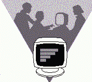
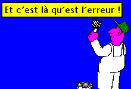

La banalisation de l'outil informatique a contribué à répandre
l'idée que son utilisation était à l'abri des risques
de toute nature : qu'ils soient matériels ou qu'ils soient le fait
d'une intention maligne. La mise en réseau des machines qui permet
une communication rapide en supprimant toutes les frontières naturelles
ou artificielles constitue un vecteur d'intrusion supplémentaire.
J'ai donc souhaité que soient mises en oeuvre, sous l'autorité
du Fonctionnaire de Défense, un certain nombre de mesures destinées
à diminuer l'insécurité liée à la nature
même des systèmes d'information et à l'environnement
des Unités de recherche..
Le Comité de Direction du 13 avril a approuvé les propositions
faites en ce sens par le Chargé de mission que j'ai nommé
et lui a accordé les moyens financiers nécessaires pour en
entreprendre la réalisation.
En permettant à chacun de prendre connaissance des risques et
des moyens de prévention, ce bulletin constituera un des véhicules
d'amélioration de la sécurité des systèmes d'information..
François Kourilsky,
Directeur général du CNRS

Un triste record
Selon une étude menée par la Software Publishing Association
et Dataquest en 1992 et citée par 01 Informatique du 29 octobre 1993,
66% des logiciels de micro-informatique utilisés en Europe seraient
d'origine illégale. La France est plus particulièrement touchée
par cette fraude puisque le taux de piratage y atteindrait 73 % des logiciels
contre 62 % pour l'Allemagne, 54 % pour le Royaume-Uni et seulement 35 %
pour les Etats-Unis.
Mais c'est en vain qu'on cherche dans cette étude une corrélation
entre le taux du piratage et le taux de conversion du dollar appliqué
par les distributeurs de logiciel des pays cités. On sait qu'en France
il est compris entre plus de 10 francs et un peu moins de 20 francs (pour
un taux officiel avoisinant 6 francs).
Prenez garde... aux sauvegardes
C'était pendant l'horreur d'une profonde nuit... Vendredi, ils
avaient quitté leur labo le soir, la conscience tranquille, sauvegardes
faites, laissant leur travail bien rangé devant l'ordinateur : cahier
de mesures dans un coin du bureau, disquettes non loin de la machine. Et
le lundi, en arrivant, l'horreur ! Des "visiteurs" étaient
passé par là ! Adieu mon bel ordinateur acquis tout récemment
! Adieu mon répondeur téléphonique! Mais, adieu aussi
le travail en cours depuis plusieurs mois. Doublement adieu puisque ses
résultats s'étaient envolés en même temps que
le disque dur de l'ordinateur et les disquettes de sauvegarde.
Moralité : ne mettez pas tous vos oeufs dans le même
panier et rangez vos sauvegardes, sinon dans un coffre, du moins loin de
tout objet de convoitise et nécessairement dans une autre pièce.
(L'authenticité de cette histoire est absolument garantie !)
Qui sont nos correspondants ?
Dans chaque Délégation régionale, nous avons demandé
au Délégué de nommer un correspondant de sécurité
informatique dont le rôle peur se résumer en une " régionalisation
" des problèmes de sécurité informatique. Il ne
serait pas réaliste de prétendre que les problèmes
se posent de la même façon à Lille qu'à Marseille.
Il ne faut donc pas que les décisions et les initiatives concernant
ces problèmes soient décidées à Paris. Mais,
d'un autre côté, il est nécessaire de coordonner les
actions entreprises sur l'ensemble du territoire.
C'est pour concilier ces deux points de vue que nous avons souhaité
relayer notre action auprès des formations CNRS administrées
par chaque Délégation par des agents qui soient sur place,
connaissent les problèmes particuliers qui peuvent s'y poser et,
surtout, puissent établir des relations directes avec ceux qui seront
concernés.
|  |
On peut définir le rôle du correspondant régional
de sécurité informatique comme l'interlocuteur privilégié
des utilisateurs et des responsables d'Unités pour tout ce qui concerne
la sécurité informatique et les incidents qui peuvent se produire
: la prévention, naturellement, la guérison, éventuellement.
Pour être à même de bien remplir ce rôle, il
est convié à une session de formation de trois jours portant
principalement sur les problèmes juridiques et autres (protection,
par exemple) posés par la sécurité. Le principal acteur
en est le Service Central de la Sécurité des Systèmes
d'Information, organisme officiel créé en 1986 pour traiter
l'ensemble des problèmes de sécurité informatique. |
C'est une mission à temps partiel exercée par l'agent en plus
de sa fonction principale.
Dans chaque unité où l'importance de l'outil informatique
le justifie, nous allons demander au responsable de désigner, en
accord avec le correspondant régional, un correspondant technique,
homme de terrain qui sera chargé de traiter les problèmes
de sécurité dans son Unité et saura faire face aux
impératifs techniques que cela suppose. Là encore, il s'agit
d'une mission à temps partielle.
C'est la continuation, en la généralisant, de l'action
que Jean-Luc Archimbaud avait entreprise depuis 1992 en vue de désigner
des responsables de réseau. Une formation spécialisée
sera organisée au bénéfice de ces correspondants techniques
sous la forme d'un stage de quatre jours, au contenu informatique plus dense
portant sur des problèmes concrets, des moyens techniques de sécurisation,
la prévention des virus informatiques et, de façon plus générale,
sur la conduite à tenir en cas d'incident de sécurité.
Il est important de noter que ces stages sont organisés en commun
avec nos collègues de l'Enseignement Supérieur.
Liste de nos correspondants
Retour sur le mot de passe
La tarte à la crème de la sécurité ! D'abord,
il faut en avoir un. Ensuite il faut s'en rappeler mais il ne faut pas qu'il
soit facile à deviner par autrui. Enfin, il faut en changer de temps
en temps. Alors, de bonnes âmes vous diront : "Plutôt que
de choisir, comme pour le tiercé, votre date de naissance ou celle
de votre mariage ou encore le numéro de votre voiture, adoptez donc
une association aléatoire du genre "GyP73uq*".
Là, on peut être tranquille, "autrui"
ne risque pas de le deviner ! Mais, vous, arriverez-vous à vous le
rappeler autrement qu'en l'écrivant sous le clavier ou sur la façade
du moniteur ? Si oui, bravo ! (1) Si non, vous allez
être obligé de l'écrire quelque part. A portée
de la main, bien entendu, c'est à dire de la main de n'importe qui,
donc facile à trouver. Plus facile en tout cas que par déduction
"logico-empirique".
Alors, quoi faire ? Y a-t-il une solution ? Dans l'absolu, la réponse
est évidemment "Non". Un mot de passe ne peut pas être
à la fois difficile à deviner et facile à mémoriser.
Il faut donc adopter un compromis. Et là, on va vous suggérer
deux démarches plausibles. Voici la première :
Chacun de nous a connu au cours de son existence
des moments, agréables ou non, dépourvus de signification
pour n'importe qui d'autre mais marquant pour l'individu lui-même.
Particulièrement dans sa jeunesse, âge où la mémorisation
est facile et la durée de rétention plus longue. Je me souviens
par exemple très bien que ma première voiture avait le numéro
d'immatriculation 7519 BU 77 (2). Il faudrait que mon
"ennemi" me connaisse vraiment bien pour avoir l'idée d'aller
entreprendre ses investigations de ce côté pour tenter de découvrir
mon mot de passe.
Oui, me direz-vous, mais quand je vais devoir le
changer ? Très simple : je vais faire une permutation circulaire
glissante et commencer par le second caractère. J'ai donc ainsi huit
mots de passe possibles (3) . Et si mon système
informatique m'interdit de réutiliser deux fois le même, après
huit périodes de validité, je pourrai toujours l'écrire
à l'envers et repartir ainsi pour huit nouvelles périodes.
Après quoi, il me restera à attaquer la chaîne des décimales
de PI... Si je n'ai pas eu dans mon existence d'événements
très personnels (mon jardin secret) dont la date est toujours présente
dans mon esprit.
Voici l'autre, un peu plus délicate puisqu'elle implique un mécanisme
d'adressage indirect dans la démarche intellectuelle. Elle demande
aussi un peu plus de mémoire : il faut se rappeler son mot de passe.
L'astuce de la méthode consiste à donner un moyen assez simple
de le retrouver en cas d'oubli. Assez simple pour l'auteur mais pas pour
n'importe qui.
Matériel nécessaire : un dictionnaire, un manuel de constructeur
ou tout autre ouvrage de bonne épaisseur. On commence par choisir
un nombre de trois chiffres inférieur au nombre de page de notre
ouvrage de référence. On lui associe un nombre de deux chiffres.
Le premier représentera une page de notre livre. Le second, une ligne
dans la page. Il devra être inférieur au nombre de lignes de
la page. Appelons "code d'accès" le nombre ainsi formé.
Le mot de passe sera alors constitué des initiales des n mots qui
se trouvent à cet endroit (n étant le nombre de caractères
du mot de passe). On peut alors s'offrir le luxe d'écrire le code
d'accès sur son tableau noir (ou sous son clavier). Mais il vaut
quand même mieux remettre l'ouvrage de référence à
sa place, dans sa bibliothèque.
On nous objectera que, s'il faut chaque fois aller chercher le livre,
l'ouvrir à la bonne page, ... c'est complètement débile
parce que trop astreignant. Pas du tout, ça c'est simplement un parachute.
Dans la pratique, on s'efforcera de mémoriser la suite de lettres
ainsi obtenu et ce n'est que si on a un doute, qu'on aura recours au décodage
à partir du code d'accès.
Exemple avec le Manuel de référence de WordPerfect (pour
PC, version 5.1, 1989) qui compte 912 pages hors index. Je choisis comme
code d'accès 31415, ce qui, en soi, est d'une rare banalité.
J'ouvre le livre à la page 314 et je regarde la ligne 15 :
accepté par WordPerfect. Pour de plus amples informations
Si mon mot de passe doit comporter 8 caractères, ce sera donc
: apWPpdpa.
Cet "algorithme" est évidemment d'une plus grande efficacité
pour les pirates à distance. Mais il n'est pas mauvais pour les curieux
locaux car ils disposent seulement de davantage de possibilités de
décodage, mais à condition qu'ils sachent où chercher...
Sur la même idée, il existe une troisième méthode
encore plus simple, plus maligne et plus élégante. Je vous
garantis qu'elle existe. Mais je me la garde...
NOTES :
1 : Ne vous vantez pas,on ne vous
croit pas ! retour
2 : Attention, c'est un faux ! Vous
ne pensez quand même pas que je vais vous donner le vrai numéro,
non mais, sans blague ! retour
3 : En admettant que j'aie le droit
d'utiliser huit caractères. Si je suis limité à six,
c'est quand même utilisable. retour
Du bon usage des anti-virus
Virus, cheval de Troie, bombe logique, tout ça, pour l'utilisateur,
c'est du pareil au même : un truc pas possible qui va causer bien
du tracas à ses collègues. Pas à lui, bien sûr
car un virus, c'est comme la mort, ça n'arrive qu'aux autres. Alors,
les anti-virus... Enfin, si on insiste et surtout si ça ne coûte
pas trop cher, il va en acquérir un et même l'installer sur
sa machine personnelle.
|  |
En effet, un anti-virus, il ne faut pas l'acheter mais s'y abonner.
Virus et anti-virus, mesures et contre-mesures, espionnage et contre-espionnage,
même combat, même escalade. Les auteurs de virus en tous genre
sont stimulés par les progrès réalisés du côté
de produits de protection-détection-éradication et inventent
sans cesse de nouvelles façons d'effectuer leurs ravages. |
Bien sûr, une fois détectés, ces virus feront l'objet
d'études pour les dépister et les éliminer. Mais entre
l'attaque et la riposte va s'écouler un certain temps pendant lequel
les anciens anti-virus seront totalement inefficaces contre ces nouveaux
intrus. Aussi les éditeurs sérieux d'anti-virus prévoient-ils
dans leurs conditions d'achat une clause de mise à jour, souvent
gratuite pendant six mois ou un an, toujours payante ensuite.
La sécurité est à ce prix. Vendre un anti-virus
avec mise à jour perpétuelle gratuite le mettrait à
un prix inabordable et ferait reculer l'acheteur.
Il est bien dommage que les éditeurs (et leurs distributeurs,
bien sûr), n'attirent pas nettement l'attention de leurs clients sur
cette question d'obsolescence. Un anti-virus, c'est un peu comme un médicament
ou une conserve, ça possède une "dlc" (date limite
de consommation).
Pour terminer, un exemple d'attaque furtive. Il y a mieux à faire
que d'empêcher une machine de booter ou d'effacer les fichiers qui
s'y trouvent. Dans des fichiers de données numériques (les
fichiers de tableurs, par exemple sont faciles à repérer à
cause de leur extension), on va ça et là, de façon
aléatoire, changer un bit. Un seul. Mais c'est suffisant pour modifier
des valeurs numériques et donc ensuite faire des calculs exacts sur
des données fausses.
Très drôle, n'est-ce pas ?
Quoi de neuf pour la sécurité
à l'IT-Forum ?
Signe des temps, l'IT Forum a remplacé le PC Forum.
Mais il reste dominé par la tendance PC et compatibles et, cette
année, il était déserté par Apple qui tenait
salon ailleurs. Sous l'angle de la sécurité, peu de choses
vraiment intéressantes à signaler. En logiciel : rien. En
matériel, deux produits n'avaient aucun mal à se distinguer,
étant à peu près les seuls.
Les onduleurs ont connu une chute de prix spectaculaire. C'est ainsi
qu'un petit onduleur en tampon du secteur, capable d'alimenter pendant 10
à 15 minutes un PC de configuration normale (donnant tout le temps
de faire une sauvegarde tranquille), coûte moins de 1 500 francs H.T.
A ce prix, on est tenté d'en mettre derrière chaque PC dès
qu'on fait de la saisie.
Un fabricant proposait une carte (toujours à insérer dans
un PC) destinée, selon lui, à assurer une protection absolue
contre tous les virus passés, présents et futurs. Nous essaierons
d'obtenir cette carte pour l'essayer. A priori, nous sommes un peu sceptiques.
Ceci nous semble un peu trop beau pour être réaliste. Mais
on ne sait jamais et on peut toujours essayer.
Au revoir ....